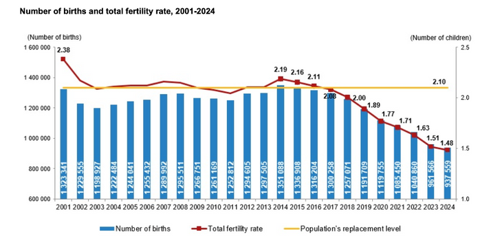
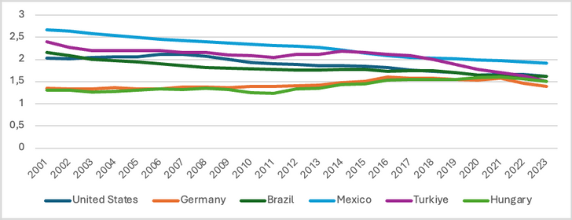
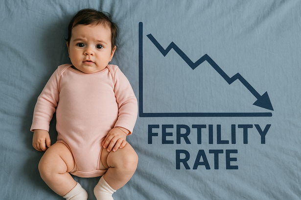

In the last years, the fertility rate in Türkiye has been very low (1.48), which is way lower than the sustainable population value of 2.1. Today, Türkiye's fertility rate has fallen to 1.48 children per woman, which means that, on average, each woman is having fewer than 1.5 children in her lifetime. Experts warn that this is well below the 2.1 rate needed to maintain a stable population. Why does this happen? Is it just about the economic crisis that we experience nowadays, or is it a worldwide trend?
To understand this phenomenon, consider the trajectory: In 2001, the fertility rate was 2.38; in 2024, it is 1.48. This represents a dramatic shift in less than a quarter century. The decline has gained particular momentum after 2018, with Türkiye now reaching fertility levels similar to developed nations like Germany and Hungary—but through rapid collapse rather than gradual transition or recovery.

Comparing global fertility trends
This decline is not unique to Türkiye. To understand whether this is a local crisis or a global pattern, consider the fertility rates in comparable countries: the United States and Germany (developed economies), Mexico and Brazil (developing economies similar to Türkiye), and Hungary and Romania (nations with similar political and economic contexts to Türkiye). The data reveals a world-wide downward trend in fertility, though Türkiye's decline is notably sharper than most peers.


Brazil, like Türkiye, shows a decreasing trend. Mexico, though at a higher absolute fertility rate, also trends downward. Germany experienced a temporary rise due to immigration and increased women's employment, then resumed decline. The United States has remained relatively stable historically, but is now also decreasing. These patterns confirm that Türkiye is following a global trend—but at a faster pace.
Türkiye is following the global trend of fertility decline, but this process is happening faster compared to other countries.
Understanding fertility decline: Demand and capacity
To understand why people are having fewer children, researchers distinguish between demand-side reasons (why people choose not to have children) and capacity-side reasons (why they struggle to have them). According to Sobotka, Beaujouan & Zeman (2024), demand-side factors include career and freedom prioritization, changing social norms that no longer treat childbearing as mandatory, lifestyle preferences for individuality and travel, economic concerns such as unemployment and high living costs, and declining marriage rates with increasingly fragile relationships.
On the capacity side, barriers include delayed childbearing (which reduces women's biological fertility window), rising infertility rates due to health problems and stress, and crucially, inadequate state support such as limited daycare access, short maternity leave, and low care allowances. These factors create a double bind: even couples who want children may find it economically or logistically impossible.
Türkiye-specific drivers of decline
Keskin and Çavlin (2022), analyzing completed fertility rates for cohorts born 1960–1982, identified distinctly Turkish drivers of decline. Education level stands out: women with higher education have fewer children, with university graduates averaging only 1.5 children. Urbanization matters too—rural women have more children than urban women. Regional differences persist, with the West having lower fertility than the East (though the East is declining as well). The generational effect is stark: women born in 1950 had an average of 4 children, dropping to 2.1 among those born in 1982. And inequality matters—not all groups decline at the same rate. The burden of change falls differently on educated versus uneducated women, urban versus rural populations, and wealthy versus poor regions.
A complementary analysis by Kavas & Civelek (2023), covering 2001–2023, adds three further mechanisms. First, the postponement effect: women are marrying and having children later, which mechanically reduces the total number born before menopause. Second, women's labor force participation is rising, and balancing work with motherhood is harder for educated women, postponing or reducing fertility. Third, the family structure itself is changing—the traditional extended family is weakening, the nuclear family is becoming the norm, and the social pressure to have many children has eased.
A global trend with local urgency
The decline in Türkiye's fertility rate is not merely a national problem but part of a global shift shaped by economic, social, and cultural change. Yet Türkiye's unique conditions—the speed of decline, the urban-rural gap, regional disparity, and the lack of strong family support systems—amplify the challenge compared to peer countries. Factors such as delayed marriage, higher education, and financial instability are common globally, but Türkiye's particular mix of conditions and weak social infrastructure make the impact sharper.
These patterns carry urgent implications. An aging population, a shrinking workforce, and demographic imbalance will strain pension systems, healthcare, and economic growth for decades. Whether Türkiye responds with inclusive, long-term policies—support for parents, subsidized childcare, flexible work arrangements, and genuine incentives—or merely laments the trend will determine whether fertility stabilizes or continues its steep decline.
Selected references
- Kavas, S., & Civelek, S. (2023). Türkiye'de doğurganlık oranlarının düşüşü: Eğilimler, nedenler ve sonuçlar. Türkiye Nüfus Etütleri Dergisi, 45(2), 92–126.
- Keskin, F., & Çavlin, A. (2022). Cohort fertility heterogeneity during the fertility decline period in Turkey. Journal of Biosocial Science, 55(4), 779–794.
- Sobotka, T., Beaujouan, É., & Zeman, K. (2024). Fertility decline in the later phase of the COVID-19 pandemic: The role of policy interventions, vaccination programmes, and economic uncertainty. medRxiv.